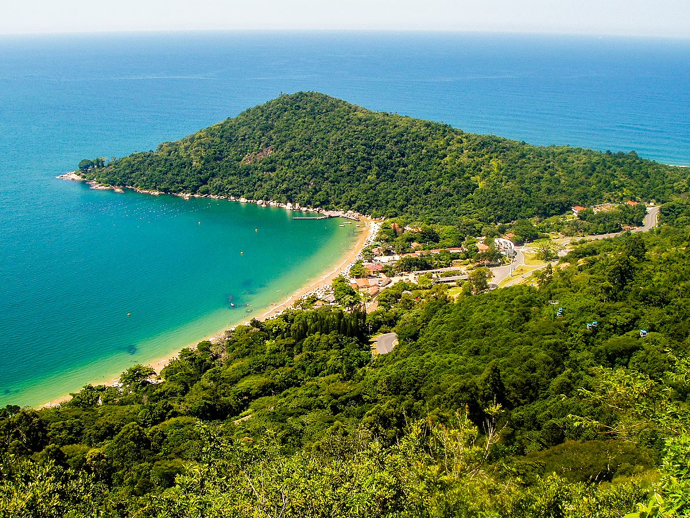
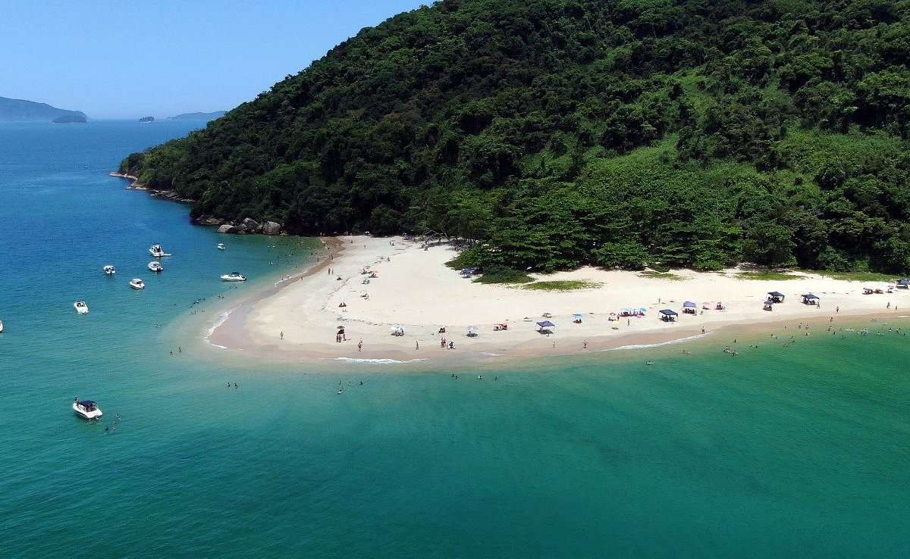

O Brasil é um dos países tropicais conhecidos pelas praias mais bonitas do planeta. Confra a melhores praias para esse verão.
Jericoacoara
Jericoacoara é uma praia localizada na vila homônima, no município de Jijoca de Jericoacoara, no estado do Ceará, no Brasil. Está localizada a 295 km a oeste da capital do estado, Fortaleza. Foi eleita em 1994 pelo jornal estadunidense The Washington Post uma das dez praias mais bonitas do planeta.Em 2014, foi eleita pelo Huffington Post a quarta melhor praia da Terra.É um dos locais mais frequentados por praticantes de windsurfe no país. A praia é parte integrante do Parque Nacional de Jericoacoara.
Atrações
Pedra Furada.
Duna do Pôr do Sol.
Igreja Nossa Senhora da Consolação.
Serrote.
Farol de Jericoacoara.
Campo de Dunas.
Baía do Sancho é uma baía de águas claras localizada a oeste do Morro Dois Irmãos e a leste da Baía dos Golfinhos, no arquipélago de Fernando de Noronha, no estado de Pernambuco, Brasil.
Atrações
Morro Dois Irmãos
Baía do Sancho
Praia das Laranjeiras

Praia das Laranjeiras é uma praia localizada na cidade de Balneário Camboriú, no estado de Santa Catarina, é uma praia de pequena extensão, com apenas 750 metros, rodeada pela Mata Atlântica e banhada pelo Oceano Atlântico.
Atrações
Parque Unipraias Camboriú, Parques de diversões e temáticos.
Molhe, Monumentos e estátuas.
Praia da ilha de Prumirim localizada no Norte de Ubatuba, é uma praia de tombo com extensa faixa de areia de aproximadamente 1,2 Km. Bem rústica e arborizada, com costeiras rochosas.
Atrações
Cachoeira na beira da rodovia.
Quiosques e praia.
Quiosques.
Praia da Ilha do Prumirim

Praia de Copacabana
Praia de Copacabana, localizada na Zona Sul do Rio de Janeiro, no bairro de Copacabana, é uma das praias mais famosas do mundo, seja pela beleza, localização e pela música
Atrações
Copacabana Palace.
Beco das Garrafas.
Parque Garota de Ipanema.
Feira de Aetesanato.
Todos nós queremos curtir as férias de verão da melhor forma possível. Fique ligado e siga as dicas a seguir. Aqui estão cinco cuidados importantes para ter nas praias durante o verão:
Use protetor solar com fator de proteção adequado (FPS 30 ou mais) e reaplique a cada 2 horas, especialmente após entrar na água. A exposição prolongada ao sol pode causar queimaduras, envelhecimento precoce e aumentar o risco de câncer de pele.
Beba bastante água para manter-se hidratado, já que o calor intenso pode levar à desidratação. Evite consumir apenas bebidas alcoólicas, pois elas podem acelerar a desidratação.
Algumas praias possuem correntes fortes que podem arrastar nadadores para o mar aberto. Fique atento às bandeiras de sinalização e sempre nade em áreas supervisionadas por salva-vidas.
Evite o sol entre 10h e 16h, quando os raios ultravioleta (UV) são mais intensos. Se estiver na praia nesse período, busque sombra e use acessórios de proteção, como chapéus, óculos escuros e roupas leves.
Coma alimentos leves e frescos. Evite comidas de origem duvidosa ou mal conservadas, pois o calor pode acelerar a deterioração e causar intoxicações alimentares.
Esses cuidados garantem maior segurança e conforto durante os dias de praia no verão.
Cuidados no Verão
Cuidados com as Crianças
Levar as crianças para a praia no verão é uma ótima maneira de aproveitar o sol e o mar, mas é importante seguir alguns cuidados para garantir a segurança e o bem-estar dos pequenos:
Utilize uma pulseira de identificação na criança.
Redobrar os cuidados com o protetor solar.
Cuide da alimentação e da hidratação.
Pacotes de Viagens
Abaixo trazemos informações de principais empresas para comprar seu pacote de viagens. Lembre-se verifique ntes a reputação da empresa, não nos responsabilizamos por golpes. Reserve sua viagem com antecedência e economize.
Clique nos íones e confira as promoções
Criadores do site
Esse site foi produzido por alunos do curso de desenvolvimento JS do Senai. Abaixo está a localização da unidade que ocorreu o curso